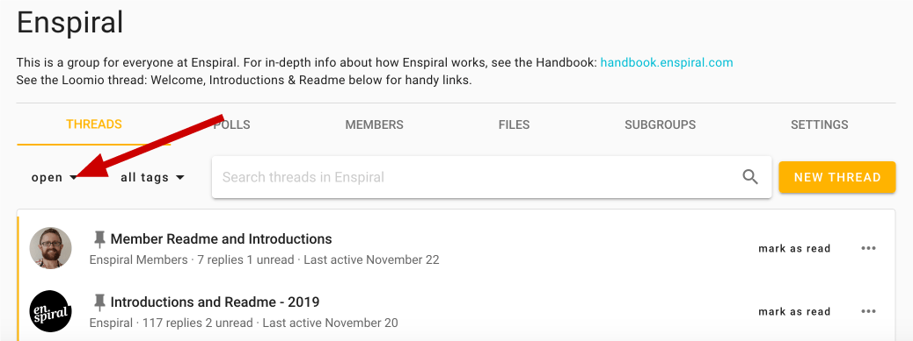

Thread administration
Pin thread
If you are a coordinator, you can pin comments to order them and make them easier to find. Pinned threads will appear above your other threads on your group page and will be ordered by the most recently pinned item at the top. You can change position of the pinned thread by pinning and unpinning threads.
You can easily pin or un-pin from the thread preview options, but only from the Group page.

Close thread
To keep the list of discussions on your group page relevant, you can close threads which people don't need to see.

To view closed threads, first navigate to the relevant group page. You will need to use the drop-down just under the Threads tab to change the thread filter from its default of open.

Choose "closed" to view all your closed threads in the thread filter.

Re-open thread
Re-opening a closed thread is done from within the thread's page – again, the three horizontal dots (⋯). See organizing threads for a depiction.
Options within threads
Thread context
Threads are easily updated and edited by those with permission to by clicking edit.
Tip: Double-clicking a thread context also opens the context editor.
Learn more about thread contexts here.
Thread Options and Organizing threads
The following administrative actions may be taken from within the thread, and in some cases from pages that list threads (thread preview options). To find these options, go to the page of the thread in question and use the ⋯ three horizontal dots to the right of the basic thread actions at the bottom of the context.

Move thread
You may want to move threads between groups and subgroups to keep things organised. To do this, select move to group from the additional options
Delete thread
If you're the admin of a group you can delete any thread – or comments in any of the threads – in the group.
If you started a thread, you can delete that thread, but only your comments within it.
Invite guests to thread
Consult an expert or external party while keeping relevant communications all in one place: Invite them to a specific thread by clicking members, at the bottom of the thread's context. They won't get access to any other threads in your group, just this one. They do not need to already have a Loomio account, and they can participate by email just like all Loomio users. If you do want them to be in the group, then invite them to join from the group page.
You can remove them (or give them permissions) by clicking the dots to the right of their name, again from the context's members button.
Administering comments and decisions
The following are achieved from any comment by first clicking on the three horizontal dots (⋯) at the bottom-right of the comment, proposal, or poll in question.
Deleting comments
You can delete your own comments at any time.
Again, an admin can delete any comment.
Select delete from the comment's options (⋯).
Move items
Sometimes a comment is useful, but off-topic for the thread; it may be a short conversation took place that would have been better held in another thread or subgroup. In this case you will want to move one or more related comment(s) and replies by selecting move item in the comment's options (⋯). This will allow you to select any number of thread items, including polls or proposals. You can then add them to a pre-existing thread of your choice, or start a new thread.
Pin to timeline
The thread timeline helps you quickly access comments and decisions in a thread. It is a visual, interactive history building with important comments, decisions and thread milestones.
Comments that include a header (H2 or H3), polls and proposals are automatically pinned to the timeline.
Click on the item in the timeline to go directly to the comment or poll in the thread.
Add, remove, or edit timeline items
To add, remove, or edit timeline items, either click the word pin or unpin at the bottom-right of any comment, proposal, or poll.
To edit the words used in the timeline: unpin and then pin it again; this will give you the opportunity to reword the text that appears as a link in the timeline.
Tip: Highlight the words that you would like to use as the text in the timeline
Archiving threads
In addition to closing threads or moving threads, you can also archive the thread to your local device:
Print thread
In the thread menu click on the 3 dots menu (⋯) and choose Print. Then use your browser's ability to "save to pdf", or copy and paste it into the file or repository of your choosing.

Tracking engagement
Seen by
Click Seen by to see who has or has not seen the thread.

Notification history
You can check if someone has been sent an email notification about a thread, decision, or comment. Additionally, you can see if they have opened this notification email or if they saw it on Loomio.
For comments and threads
In the extra options you find from the three horizontal dots (⋯), click See notifications.
For proposals and polls
Click on the dots (⋯) under the Results section of your proposal or poll, and then click See notifications to see who has been invited to – and who has viewed the notification of – your proposal or poll.
Here's how it looks if you sent some notifications: